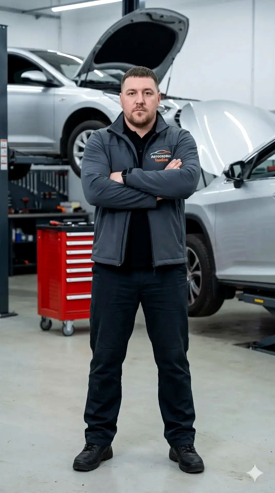
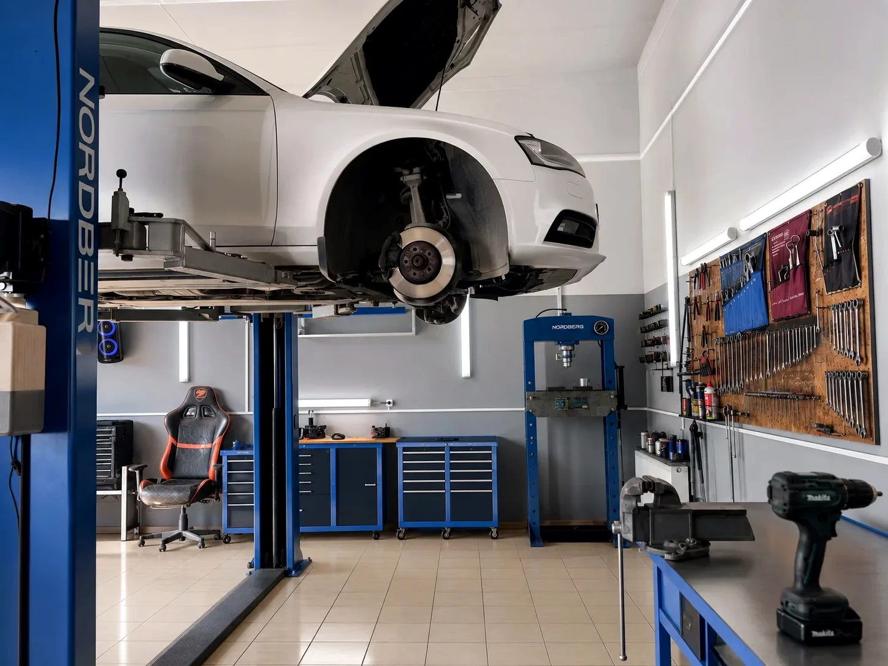
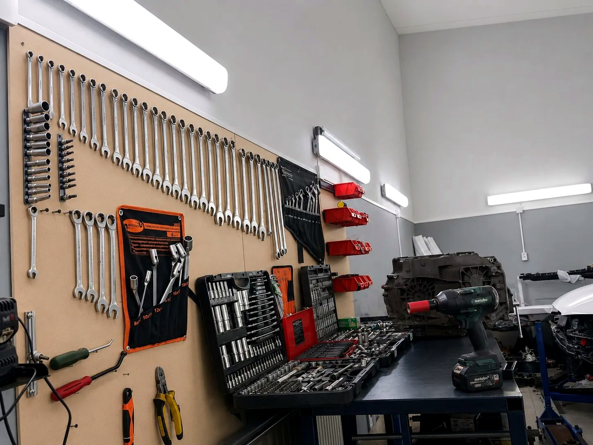
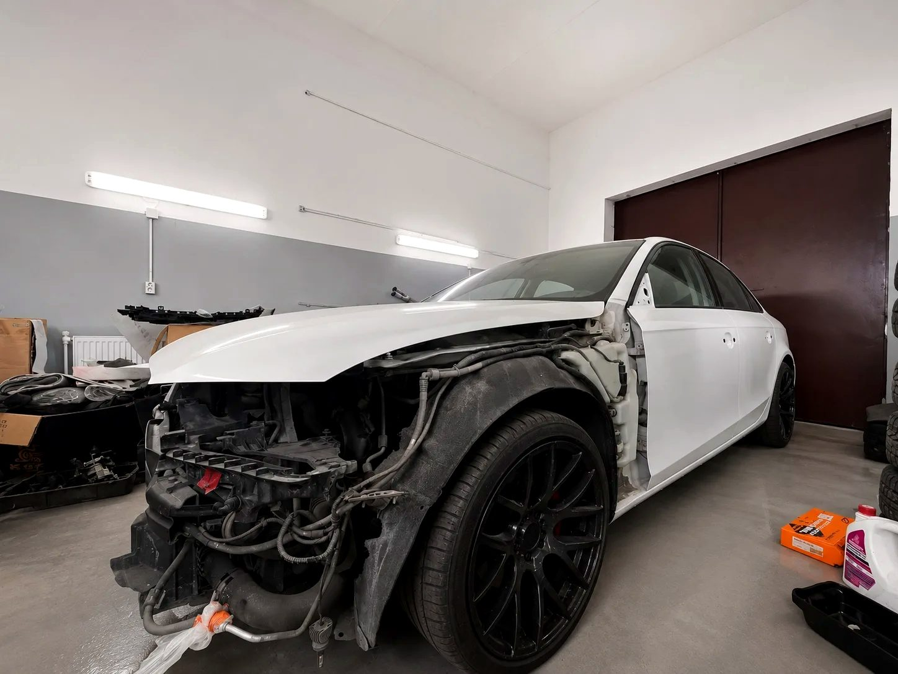

Честная диагностика
Показываем реальное состояние авто и разделяем работы на срочные и те, что можно отложить. Без «накрутки» лишнего.
Восстанавливаем работу двигателя и ходовой части, приводим в порядок тормозную систему, обслуживаем подвеску и следим за состоянием масла и фильтров. Сначала честная диагностика и понятный список работ — и только потом ремонт, без навязанных услуг и с гарантией на результат.

Почему выбирают нас
Показываем реальное состояние авто и разделяем работы на срочные и те, что можно отложить. Без «накрутки» лишнего.
Более 8 лет работы с двигателем, ходовой, подвеской и тормозами. Знаем типичные болячки популярных моделей.
Замена масла и фильтров — за 30–60 минут. Сроки ремонта называем заранее и стараемся не задерживать.
Даём гарантию на выполненные работы и установленные запчасти. Условия фиксируем в заказ-наряде.
Стоимость согласуем до начала ремонта. Вы понимаете, за что платите, ещё до подъёма машины на стенд.
Подъёмники, пресс и инструмент профессионального класса для точной и аккуратной работы.
Услуги автосервиса в Тамбове
Замена амортизаторов, пружин, сайлентблоков, шаровых опор и рычагов. Возвращаем управляемость и комфорт.
Полная проверка подвески и рулевого управления. Находим причину стуков и увода авто в сторону.
Подбираем и заливаем моторное масло с проверкой уровня и состояния в двигателе и узлах.
Масляный, воздушный, салонный и топливный фильтры — по регламенту или при загрязнении.
Профилактика и ремонт подвески: стойки, втулки, опоры. Сохраняем ресурс шин и плавность хода.
Колодки, диски, тормозная жидкость, суппорты. Восстанавливаем эффективное и безопасное торможение.
Считываем ошибки электронных систем, определяем неисправности по датчикам и блокам управления. Объясняем причину понятным языком и рассчитываем стоимость ремонта до начала работ.
Как мы работаем
Оставляете заявку на сайте или звоните — коротко описываете проблему или нужную услугу.
Проверяем автомобиль и определяем точную причину неисправности.
Рассказываем, что нужно сделать сейчас, а что можно отложить — решение за вами.
Выполняем согласованные работы на подходящем оборудовании.
Показываем результат и заменённые детали, отвечаем на оставшиеся вопросы.
Акции
Дарим скидку 15% на работы в течение трёх дней до и после вашего дня рождения. Просто покажите документ.
ВоспользоватьсяПриезжайте на первую диагностику ходовой бесплатно. Получите честный отчёт о состоянии подвески без обязательств.
ЗаписатьсяАкции не суммируются между собой. Подробности и условия уточняйте у администратора при записи.
Наш сервис



С какими автомобилями работаем
Работаем с большинством массовых марок, представленных на дорогах Тамбова — от японских и корейских моделей до отечественных и китайских. Не нашли свою марку в списке — уточните по телефону, скорее всего, тоже возьмёмся.
 Toyota
Toyota Kia
Kia Hyundai
Hyundai Volkswagen
Volkswagen Skoda
Skoda Renault
Renault Nissan
Nissan Lada (ВАЗ)
Lada (ВАЗ) BMW
BMW Audi
Audi Ford
Ford Mazda
Mazda Mitsubishi
Mitsubishi Honda
Honda Lexus
Lexus Volvo
Volvo Chevrolet
Chevrolet Peugeot
Peugeot Opel
Opel Subaru
Subaru Suzuki
Suzuki Infiniti
Infiniti Jeep
Jeep Datsun
Datsun УАЗ
УАЗ Geely
Geely Omoda
Omoda Tank
Tank Jetour
Jetour Evolute
EvoluteВопрос–ответ
В среднем моторное масло меняют каждые 8 000–10 000 км или раз в год. При частых поездках по городу, коротких маршрутах и зимних запусках интервал лучше сокращать. У нас в Тамбове мы подбираем интервал под ваш автомобиль и стиль езды и сразу проверяем уровень и состояние масла.
Насторожить должны: загоревшийся «чек», падение мощности и провалы при разгоне, троение и вибрация на холостых, посторонние стуки, синий или чёрный дым из выхлопа, повышенный расход масла или топлива, перегрев. При любом из этих симптомов лучше сразу сделать компьютерную диагностику двигателя — мы считаем ошибки и найдём причину до того, как поломка станет дорогой.
Компьютерная диагностика двигателя включает считывание кодов ошибок из блока управления, проверку показаний датчиков в реальном времени, оценку работы системы зажигания, топливоподачи и впуска. При необходимости проверяем компрессию в цилиндрах и состояние свечей. По итогам вы получаете понятное объяснение неисправности и расчёт стоимости ремонта.
Плановое обслуживание (масло, фильтры, свечи) поддерживает двигатель в норме. Ремонт требуется, когда есть конкретная неисправность: стук, потеря компрессии, течь масла или антифриза, перегрев, ошибки по катушкам или форсункам. Точный объём работ мы определяем по результатам диагностики и всегда согласовываем с вами до начала ремонта.
Основные признаки: стуки и скрипы на неровностях, увод автомобиля в сторону, неравномерный износ шин, вибрация на руле, раскачка кузова после ям. При любом из этих симптомов стоит сделать диагностику ходовой. В Тамбове первая диагностика ходовой у нас — бесплатно.
Мы осматриваем и проверяем амортизаторы, пружины, сайлентблоки, шаровые опоры, рулевые наконечники, стойки и втулки стабилизатора, ступичные подшипники, ШРУСы и состояние тормозных элементов. По итогам вы получаете честный список того, что требует замены сейчас, а что можно отложить.
Проверять подвеску рекомендуется раз в 15 000–20 000 км или при появлении посторонних звуков. Расходные элементы (сайлентблоки, стойки стабилизатора) меняются по износу. Регулярный осмотр продлевает срок службы шин и сохраняет управляемость.
Замена масла и фильтров — около 30–60 минут. Диагностика — 30–40 минут. Ремонт подвески и тормозов чаще занимает от 1 до 3 часов, ремонт двигателя и сложные случаи — дольше. Точные сроки называем после диагностики, до начала работ.
Да, мы стараемся принять без записи, но в часы загрузки возможно ожидание. Чтобы приехать в удобное время и без очереди, лучше записаться заранее по телефону или через форму на сайте.
Да. Мы предоставляем гарантию на выполненные работы и установленные запчасти. Срок и условия гарантии зависят от вида работ и согласовываются при оформлении заказа-наряда.
Запись на ремонт
Оставьте заявку — перезвоним, уточним детали и подберём удобное время. Можно также позвонить напрямую.
Контакты